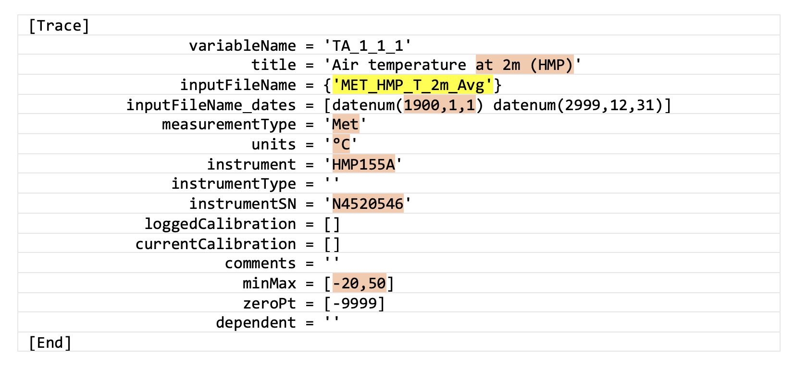

5.3. Full Documentation: First Stage INI files
This section provides extensive details beyond the first-time set up in section 4, to help more advanced users. If you are creating INI files for the first time, we highly recommend following our quick-start tutorial: instructions for INI file creation begin in section 4.3.
On this page:
- What are INI files?
- General outline for creating first stage INI file
- Running first stage cleaning in Matlab
- Properties and parameters: first stage INI
- Tags for dependent variables
- Global variables and include files
- Outlier detection
- Overwrite feature
- More about Evaluate and postEvaluate: order of operations
- Creating INI file from Ameriflux data
- Programming syntax rules for first and second stage INI files
- Tips
What are INI files?
The INI files for a given flux site dictate how data is transferred from its raw format into a standardized, clean, and gap-filled format that can be used for scientific analysis. They provide instructions to a set of MATLAB and R scripts used to process data. Even though flux sites can be similar in set up, they are usually unique in some way (different sensors, loggers, record lengths, etc.), and the INI files provide a way to deal with these differences while standardizing the data across sites.
There are three files, one for each data cleaning stage. Before starting to create your own INI files, it is important that you complete all of section 2, read section 3, and complete sections 4.1 and 4.2 (which each have supplementary information in sections 5.1 and 5.2, respectively), so that you have the best chance of everything running smoothly.
General outline for creating your first stage INI file
If you are doing this for the first time, you can obtain simplified template files from the quick-start instructions in section 4.3, and we recommend that you follow the tutorial in that section. These are the general steps to create your first stage INI (which usually requires the most work of the three stages):
Using your duplicated first stage INI file or downloaded template file, rename it using your unique measurement site ID. For example, the first stage INI file for a site with siteID = ‘DSM’ is named
DSM_FirstStage.ini. This exact naming convention is important for the pipeline libraries to locate and use the file.Edit this first stage INI file, adding just a few variables at a time and test as you go (see subsection “Running first stage cleaning in Matlab” later on this page), before adding more variables. This will make troubleshooting much easier. The tutorial in section 4.3 gives step-by-step instructions for adding variables.
Details on INI file properties and parameters are listed in table 5.1 on this page.
In addition to the data cleaning principles previously outlined in section 3, keep in mind the following guidelines:
- Select traces that are needed for future data analysis. Not all the measured variables from a site need to be here, only the ones that will be used in future analysis or those needed to improve cleaning, such as diagnostic variables.
- Each first stage trace name should follow Ameriflux guidelines including positional qualifiers where relevant. Filenames from your raw database can be renamed here.
- The original values can be altered; calibrations can be applied; units can be changed.
- Apply basic filtering: (a) values can be removed if they exceed minMax thresholds; (b) values can be clamped to the thresholds if they exceed clampedMinMax values.
- You can create dependencies between different traces. If one trace has some data points removed, all its dependent traces will also have those data points removed.
- More complex user-defined processing can be applied to the trace using the very useful “Evaluate” option (also available in second stage cleaning). Matlab functions (user-written or
Biomet.net) can be called from this statement. Multiple Matlab statements can be called from within the “Evaluate” string.
Example for air temperature trace: if you have an output variable from a Campbell Scientific data logger that represents your 2-m air temperature measurement named
MET_HMP_T_2m_Avg, you would assign this variable name to theinputFileNameparameter (figure 5.3A; yellow highlighted text). In this example, it would be renamed in this stage using thevariableNameparameter, asTA_1_1_1, following the Ameriflux naming convention.
Figure 5.3A. Air temperature trace (
TA_1_1_1) as defined in a first stage INI file, with input fromMET_HMP_T_2m_Avgvariable.Other fields that need editing are highlighted in peach:
- Give a descriptive title to your trace;
- Input the start date of measurements for this variable in matlab’s datenum format (YYYY,MM,DD);
- Input the source folder into measurementType (Met/Flux/other; these should match up with different measurement systems, i.e., Met for the Campbell Scientific data example, and Flux for EddyPro data);
- Check the units;
- If known, input the instrument model and serial number (SN);
- Importantly, choose minMax bounds that are appropriate for the climate of your site (values outside this range will become NaNs).
- For details of all the parameters and their definitions, see the “Properties and parameters: first stage INI” subsection below.
If you have more than one air temperature measurement, you would create more traces to assign these, and use the Ameriflux naming convention to distinguish and define their relative positions (figure 5.3B).

Figure 5.3B. Second air temperature trace (
TA_1_2_1) defined in the same first stage INI file, in this case for a different vertical position (height of 350 cm), with input fromMET_HMP_T_350cm_Avgvariable.
Running first stage cleaning in Matlab
Once you have a few variables in your INI file, test it by running the
fr_automated_cleaning.mfunction in Matlab (part ofBiomet.netlibrary), using the following command:fr_automated_cleaning_(yearIn,'SITEID',1)where the arguments are defined as follows:
Table 5.3A. Argument definitions for
fr_automated_cleaningfunction.Field Description Type yearIn year(s) you wish to clean data for integer or integer array SITEID measurement site ID, e.g., ‘DSM’ string uppercase cleaning stage to run 1 = first stage, 2 = second stage, 7 = third stage, 8 = convert to AmeriFlux CSV file integer For example, to run first stage cleaning for the DSM site for 2022, you would type:
fr_automated_cleaning(2022,'DSM',1).With this function, you can clean multiple years of data, e.g.,
2020:2023, and once you have your INI files set up for later cleaning stages you can also run multiple stages e.g.,[1 2 7]. Earlier stages must have been run at least once before running subsequent stages, so the appropriate data files exist as input for the next stage.
Properties and parameters: first stage INI
Table 5.3B. First stage INI file properties and parameters.
| Field | Description |
|---|---|
| Header/Comments | “%” character indicates the beginning of a comment. Program will not process any characters that follow “%”. Use comments to add information and to better document the site. Each line of the INI file can be followed by a comment. Refer to the sample INI file for DSM site. |
| Site_name | Name of the site. Any text can go here. |
| SiteID | This is the name attributed to the site in the database (e.g., DSM). Must be uppercase. |
| Difference_GMT_to_local_time | Time difference between GMT time, that database is kept in, and the standard time at the site location. local_time+Difference_GMT_to_local_time -> GMT time. |
| [Trace] | Marks the beginning of a new variable. The section has to end with the keyword [End]. |
| variableName | Name of variable for first stage, following the Ameriflux naming convention. The variable with this name will show up in the subfolder “Clean” under the same folder where the original database file came from. |
| title | Descriptive variable name for plots/visualization. |
| inputFileName | {inputFileName} The name of the database file that contains data for this trace. The brackets are mandatory.The file name can include folder(s), e.g., 'Met/Tair', and the paths are relative to the main site path (./Database/yyyy/SITEID), so the above example translates into this filepath: './Database/yyyy/SITEID/Met/Tair'.Over the lifetime of a measurement site, the data logger programs can change and a sensor measurement that was assigned to a variable may change. To allow for different variable names over the site history the inputFileName can be given as: { 'inputFileName1','inputFileName2'}. In this case, the parameter inputFileName_dates must be present and reflect this (see next parameter description).Advanced: if there is a need to load up a data file from an alternative site, the path can be constructed as follows: ../../SITEID2/dataFolder. This syntax ../../ moves the path pointer up two directory levels to /Database/yyyy and from there SITEID2/dataFolder takes the program to the correct folder. |
| inputFileName_dates | [datenum_start1 datenum_end1; datenum_start2 datenum_end2] The start and end dates of data periods for each of the inputFileNames, using the Matlab datenum function. If there are multiple inputFileNames per the example in the previous parameter description, e.g., { 'inputFileName1','inputFileName2'} then the program needs to know the time periods when the data assigned to the variableName should come from inputFileName1, and when from inputFileName2. In that case, this field is mandatory.If the inputFileName parameter contains only one file name, this inputFileName_dates parameter is optional, but it is still a good practice to use it anyway for documentation purposes and in case other filenames are added in the future. The last datenum_end is usually set far into the future, e.g., datenum(2999,1,1). |
| measurementType | Usually 'Met' or 'Flux' (must be of Matlab type char). Mandatory parameter that sets the input and output trace folders. The input folder defaults to: SITEID/measurementType/inputFileName. If relative paths are used for the inputFileName parameter defined previously, the pipeline code “assumes” that the current folder is SITEID/measurementType, so the relative path is referenced to that. The output folder for the first stage cleaned trace is always SITEID/measurementType/Clean. Note: the measurementType must not be missing (empty), otherwise the data will be saved to SITEID/Clean/variableName which is incorrect and will cause errors in future cleaning stages. |
| units | Measurement units for this trace must be data type char. Important! |
| instrument | The name of the sensor that measures this trace, e.g., 'HMP155A' |
| instrumentSN | Serial number of the sensor, if available. |
| Evaluate | Optional user-defined function. Examples: can be used to derive variables from available data; in flag variables to remove bad data; or for calculating new useful variables, e.g., Evaluate = 'TA_1_1_1 = shiftMyData(clean_tv,TA_1_1_1,datenum(2021,11,07,03,00,0),60);'. |
| postEvaluate | Optional user-defined function, intended for more complex cases. Same functionality as Evaluate property, but postEvaluate is executed after all the other Trace properties. |
| loggedCalibration | Used together with currentCalibration (see next parameter). If you need to change the linear calibration for the trace, these coefficients are used to convert the trace values from engineering units to their original/raw units. Then the correct calibration coefficients (currentCalibration) are used. This can also be used to change the units. The format is [gain offset startDatenum endDatenum], where startDatenum and endDatenum refer to the time span that this particular set of coefficients should be applied. For example, with no change for data starting on 1 January 2020, the code would read loggedCalibration = [1 0 datenum(2020,1,1) datenum(2999,1,1)]. You can apply multiple calibrations to different time periods, separated by semicolons.Note: all calibration values need to be on the same line of code, i.e., no line-breaks are allowed in the INI file! |
| currentCalibration | Correct(ed) linear calibration coefficients. Used together with loggedCalibrations (see notes for previous parameter for more details). |
| comments | Any useful comments relating to this trace and its handling in the INI file, such as why certain flags are applied. |
| minMax | [min max] Minimum and maximum numerical thresholds for filtering. The values outside of this range will be set to NaN. |
| clamped_minMax | [cMin cMax] Similar to minMax but instead of setting the data points outside the range to NaN, it truncates their value to the cMin or cMax. (e.g., RH: [0 100]).Note: this parameter is not mandatory, however, when used, please make sure that the minMax property boundaries are wider than the boundaries of clamped_minMax because the minMax property is applied first. This parameter is useful for variables such as relative humidity, e.g., minMax = [-1 110] used with clamped_minMax=[0 100]. |
| zeroPt | Value to indicate missing data. Many programs nowadays use -9999 to indicate bad/missing data points. |
| dependent | Filter-dependent variables based on specified trace. The current trace can have multiple dependents that need to be separated by commas, e.g., dependent = 'trace1','trace2','trace3'.For example, when using the LI-7200 pump, all the traces that depend on the LI-7200 are dependent on the pump trace. So, for the LI-7200: dependent = 'CO2','H2O'. Then the CO2 trace should have dependent = 'FC',... and so on. You can write these out manually where necessary or where this only occurs once or twice, but we highly recommend using the “tags” feature for common dependencies that are recurring. |
| [End] | Marks the end of the properties section for each trace. |
Note: Other properties that a user wants to use later on in their own programs (or in the “Evaluate” statements) can be added to each of the traces. The function that processes the INI files (read_ini_files.m) will add the property and its assigned value to the trace structure, but the rest of the Trace Analysis programs will ignore it. The user can then parse the trace info in their own programs (or within “Evaluate” statements) and take advantage of this feature.
Global variables and include files
To simplify entering and editing the required parameters into the first stage INI file, there is an option to apply the same setting to many traces at once, using the “global variables” feature. At the top of the first stage INI template file (obtained in section 4.3), you will notice sections with headers containing “Global variables”. These are always defined at the beginning of the first stage INI file.
The main advantage of this feature is that it allows you to define a standard set of variables in templates called “include” files, which can be loaded into each site-specific INI file using the #include statement. We have provided samples of typical Met and EddyPro include files in the quick-start tutorial.
Another advantage is that you can apply changes to multiple traces all at once if needed, by making only one edit at the top of the file and then referencing this addition. This way, you do not risk missing multiple traces needing the same edit, so long as it is referenced correctly.
Note: only the main body of your first stage INI file, not your “include” files, should contain global variables.
There are two types of global variables, as follows:
- Instrument-specific (
globalVars.Instrument):
- For the instrument-specific global variables, each trace has an
instrumentTypefield. Currently we use five default instrument types (six if we consider an empty field[]as a type): LI7200, LI7700, Anemometer, EC, and otherTraces. - Example:
globalVars.Instrument.LI7200.instrumentSN = '72H-1029'
applies this serial number to every trace which includesinstrumentType = 'LI7200'. - You can also create your own unique sensor option for
instrumentType, if you need to apply a setting to multiple traces. otherTraceshas been depreciated so if an existing INI file contains this code (e.g., from an old template file), you can either set it to zero or remove those lines of code altogether (otherTraces.Enable = 0). If this is set to1, you will get warnings when you run cleaning.
- Trace-specific (
globalVars.Trace):
- Example:
globalVars.Trace.CH4.currentCalibration = [1000 0 datenum(2021,1,1) datenum(2999,1,1)]applies this current calibration to the trace withvariableName = 'CH4'. - Detailed explanation: in the INI file, the trace “CH4” has the field
currentCalibrationset to empty:currentCalibration = []. There is a global variable for the same trace with the correctcurrentCalibrationfield:globalVars.Trace.CH4.currentCalibration = [1000 0 datenum(2021,1,1) datenum(2999,1,1)]The final result is that the fieldcurrentCalibrationfor the trace “CH4” gets set to:currentCalibration = [1000 0 datenum(2021,1,1) datenum(2999,1,1)].
- Other (
globalVars.other):
- For the third type of global variable, e.g.,
globalVars.other, currently you can use this to carry out single-point interpolation, for cases where just one half-hourly data point is missing:globalVars.other.singlePointInterpolation = 'on' % 'no_interp' - skip interpolation [default], 'on' - do single missing point interpolation for all traces
Adding include files to your First Stage INI file
In sections 4.1 and 4.2, we introduced include files and how they are obtained. These template files define a standard set of variables that can be loaded into your first stage INI file. Specifically, the files relate to EddyPro output and radiation components. We suggest browsing through these files to become familiar with the content. If you wish to change or add any settings, we strongly recommend leaving the template “include” files untouched and using the global variables feature to create or overwrite the relevant setting, as previously described.
More information about include files:
EddyPro_Common_FirstStage_include.ini: includes traces common to EddyPro output, listed in EddyPro file output order;EddyPro_LI7200_FirstStage_include.ini: when an LI-7200 IRGA is being used, this file adds LI-7200 specific traces, listed in EddyPro file output order;EddyPro_LI7500_FirstStage_include.ini: when an LI-7500 IRGA is being used, this file adds LI-7500 specific traces, listed in EddyPro file output order;EddyPro_LI7500_FirstStage_include.ini: when an LI-7500 IRGA is being used, this file adds LI-7500 specific traces, listed in EddyPro file output order;RAD_FirstStage_include.ini: includes radiation components.
To include any of these files, add the following line of code to the very bottom of your first stage INI file: #include <relevant_file>_include.ini. If you are using more than one, put them on multiple lines of code, still at the very bottom of the INI file, as follows:
#include EddyPro_Common_FirstStage_include.ini
#include EddyPro_LI7200_FirstStage_include.ini
#include RAD_FirstStage_include.iniHow the global variables algorithm works:
- The INI file trace parameters, i.e., all fields between [TRACE] and [END] in the INI file, are loaded up.
- The program then cycles through all the traces: for each trace, first it checks if the
instrumentTypefield matches one of theglobalVars.Instrumentfields, e.g., forinstrumentType = 'LI7700'measuring “CH4”, if there is aglobal.Instrument.LI7700field, then all its fields would be applied to the CH4 trace, either creating a new field or overwriting the existing fields; i.e., the content ofglobal.Instrument.LI7700.instrumentSNwould replace the content of the CH4 fieldinstrumentSN. Secondly, it checks if the tracevariableNamematches any of theglobalVars.Tracefields, e.g. Trace “CH4”. - The program continues reading the INI file and applies all the settings from the [TRACE]-[END] section.
- Next, it cycles through all the
globalVars.Instrumentfields and creates the fields or overwrites them if they already exist. - Finally, it goes through all the
globalVars.Tracefields and creates or overwrites the fields. - Then the program moves to the next trace and repeats steps 2–5.
Outlier detection
As outlined earlier on this page, the Evaluate feature can be used to implement Matlab code. This can be useful for removing outliers from your data in the first stage. For example, in the Biomet library there are some existing functions to help with this, such as:
remove_spikes_diurnal_nonParametric.mrun_std_dev.m
Alternatively, you could include your own code to do this, depending on what you need.
Overwrite feature
Sometimes we need to overwrite multiple properties for one or more traces that have already been created e.g. in an include file. The global variables feature allows this, however, once this section becomes long with many trace property tweaks, it can become very hard to troubleshoot, and in these cases having all the information for one trace together is more desirable.
Instead of using global variables you can duplicate the full trace ([Trace] ... [End]), and in your site-specific first stage INI file, put this duplicate after the line of code where the include file is called that contains your original trace. Note the additional Overwrite property highlighted in yellow:

Figure 5.3C. Location within site-specific INI file to put duplicate trace for overwriting a trace previously defined in an include INI file. In this case, we want to overwrite the CH4_MIXING_RATIO trace that was originally defined in EddyPro_LI7700_FirstStage_include.ini. Yellow highlighting shows the syntax for the “overwrite” property.
There are three overwrite options:
0= do not overwrite with this trace. This is the default setting. If you do not include theOverwriteparameter, the pipeline assumes this option. If you have a duplicate trace, you will get an error during cleaning (Example 1):1= overwrite traces having the same variableName and also withOverwrite = 0setting. This puts the duplicate data where the original data was, i.e., complete overwrite, first trace gone. Use this setting if you want your duplicate T2 available to use in a later variable such as T3, T4, T5, etc. (Example 2):2= overwrite traces having the same variableName and withOverwrite = 0setting. This takes advantage of the “position” of the duplicate trace. Use this setting if you want a later variable such as T3 or T4 available to use in T2.
More about Evaluate and postEvaluate: order of operations
More complex user-defined processing can be applied in the first stage to any trace using the very useful “Evaluate” and new “postEvaluate” options. Matlab functions (user-written or from Biomet.net) can be called from this statement. Multiple Matlab statements can be called from within the “Evaluate” or “postEvaluate” strings. They can be used to derive variables from available data, flag variables to remove bad data, or to calculate new useful variables. Here is an Evaluate example for removing outliers from a trace:
Evaluate = 'wlen=24;thres=4;TA_1_1_1 = run_std_dev(TA_1_1_1,clean_tv,wlen,thres);'The Evaluate property is executed for all traces before any other cleaning properties, e.g., minMax, calibration, etc.. In contrast, the newer postEvaluate property is executed in the first stage after all other cleaning is done.
Generally speaking, the order of operations is:
Evaluate –> other cleaning (e.g., minMax, calibration) –> postEvaluate.
This is regardless of the order that they appear within [Trace] ... [End]. The following series of examples shows how the Evaluate and postEvaluate statements work in relation to the other cleaning properties. For each example the input (Original) is an array of ones, and both the “Original” and first-stage “Clean” data are plotted in the result.
Example 1: Only minMax and calibration, no Evaluate or postEvaluate statements

Result: x = 2x [calibrated]
Example 2: Evaluate, minMax and calibration, no postEvaluate statement
Result: x = (x - 1)*2 [Evaluate first, then calibrate]
Example 3: minMax and calibration, postEvaluate statement, no Evaluate statement
Result: x = 2x - 1 [calibrate, then postEvaluate]
Example 4: minMax and calibration, both Evaluate and postEvaluate statements
Result: x = (x - 1)*2 - 1 [Evaluate, then calibrate, then postEvaluate]
Programming syntax rules for first and second stage INI files:
Some programming rules that you must follow for the first and second stage INI files to be successfully read by the pipeline scripts:
1. We enforce using uppercase for site IDs to avoid problems with running data cleaning on Mac vs. Windows.
2. All traces must be enclosed in [Trace] and [End] blocks.
3. All assignments can be on multiple lines but should be enclosed in single quotes.
4. Comments must begin with a percentage sign (%).
5. All fields must be in Matlab format.
6. All parameter assignments must be to strings in single quotes, or numeric expressions, e.g., threshold_const = 6, threshold_const = [6], variableName = 'Some Name'.
7. For the first stage, the partial path must be included with the inputFileName when you locate the raw data trace in the database. (Using biomet_path function only returns the path: /year/SITEID/measType/)
8. First stage necessary fields are: variableName, inputFileName, measurementType, units, title, and minMax.
9. Second stage necessary fields are: variableName, title, units.TIPS
Once your INI file is complete, if desired you can use the simplify_FirstStageIni() function to clean it up. This may be helpful if you used a legacy INI file as an example; the function removes obsolete fields and makes things more concise.